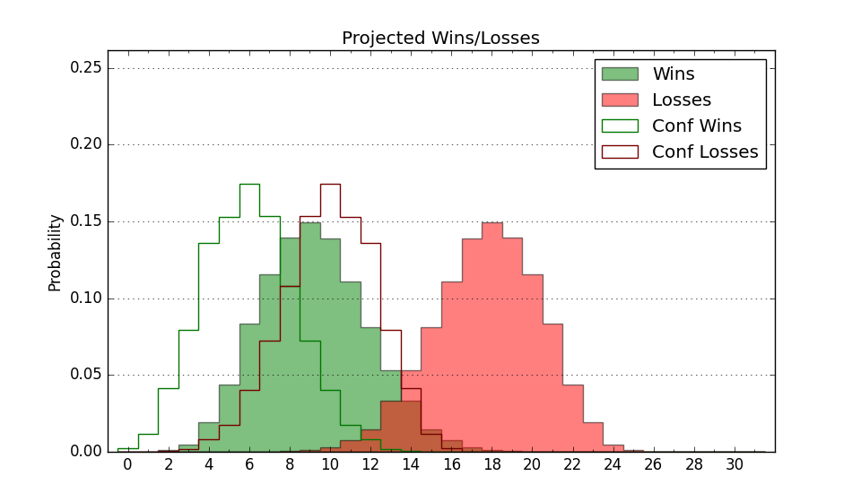

| Home | Game Probabilities | Conferences | Preseason Predictions | Odds Charts | NCAA Tournament |
| City: | Loretto, Pennsylvania | |
| Conference: | Northeast (1st)
| |
| Record: | 0-0 (Conf) 2-5 (Overall) | |
| Ratings: | Comp.: -22.1 (354th) Net: -22.2 (342nd) Off: 86.7 (355th) Def: 108.9 (281st) SoR: 0.0 (242nd) |
| Remaining | ||||||
|---|---|---|---|---|---|---|
| Date | Opponent | Win Prob | Pred. | |||
| 12/10 | @ Iona (166) | 6.0% | L 61-80 | |||
| 12/15 | Mount St. Mary's (274) | 35.4% | L 66-70 | |||
| 12/20 | Robert Morris (279) | 36.7% | L 67-71 | |||
| 12/30 | Campbell (297) | 40.7% | L 62-65 | |||
| 1/4 | @ Sacred Heart (303) | 17.5% | L 66-77 | |||
| 1/6 | @ Wagner (324) | 21.6% | L 58-67 | |||
| 1/13 | Central Connecticut (309) | 43.6% | L 69-71 | |||
| 1/15 | Fairleigh Dickinson (339) | 54.6% | W 79-78 | |||
| 1/19 | LIU Brooklyn (351) | 62.7% | W 73-69 | |||
| 1/21 | @ Le Moyne (336) | 24.9% | L 68-76 | |||
| 1/25 | Sacred Heart (303) | 41.9% | L 70-73 | |||
| 1/27 | Merrimack (224) | 24.9% | L 60-67 | |||
| 2/1 | @ Central Connecticut (309) | 18.5% | L 65-75 | |||
| 2/3 | @ LIU Brooklyn (351) | 33.1% | L 69-74 | |||
| 2/10 | Stonehill (358) | 69.1% | W 75-70 | |||
| 2/15 | Wagner (324) | 48.4% | L 62-63 | |||
| 2/17 | @ Fairleigh Dickinson (339) | 26.1% | L 75-82 | |||
| 2/22 | @ Merrimack (224) | 8.9% | L 56-71 | |||
| 2/24 | @ Stonehill (358) | 39.6% | L 71-74 | |||
| 3/2 | Le Moyne (336) | 53.0% | W 73-72 | |||
| Previous | Game Score | |||||
| Date | Opponent | Win Prob | Result | Off | Def | Net |
| 11/6 | @UCLA (61) | 1.7% | L 44-75 | -11.5 | 4.4 | -7.1 |
| 11/9 | @San Francisco (56) | 1.5% | L 52-84 | -2.2 | -1.5 | -3.7 |
| 11/11 | @Santa Clara (123) | 3.8% | L 59-82 | -2.9 | -1.2 | -4.2 |
| 11/14 | @Penn St. (97) | 2.9% | L 53-83 | -4.8 | 1.1 | -3.7 |
| 11/25 | Niagara (326) | 49.0% | L 61-69 | -13.9 | -6.7 | -20.6 |
| 11/29 | @Lehigh (262) | 12.5% | W 62-61 | -6.7 | 28.4 | 21.7 |
| 12/2 | @American (310) | 18.7% | W 75-73 | 14.3 | 6.1 | 20.4 |
| Stats & Trends | |||||
|---|---|---|---|---|---|
| Current | Day | Week | Month | Season | |
| Composite | -22.1 | -0.2 | -0.6 | -0.2 | -0.2 |
| Comp Rank | 354 | -- | -1 | +5 | +5 |
| Net Efficiency | -22.2 | -0.4 | -1.2 | -- | -- |
| Net Rank | 342 | -2 | -1 | -- | -- |
| Off Efficiency | 86.7 | -0.7 | +1.4 | -- | -- |
| Off Rank | 355 | -1 | -- | -- | -- |
| Def Efficiency | 108.9 | +0.3 | -2.5 | -- | -- |
| Def Rank | 281 | +6 | -43 | -- | -- |
| SoS Rank | 58 | +2 | -32 | -- | -- |
| Exp. Wins | 9.2 | +0.2 | +1.2 | +1.5 | +1.5 |
| Exp. Conf Wins | 6.0 | +0.2 | +0.5 | +0.2 | +0.2 |
| Conf Champ Prob | 1.5 | +0.2 | +0.0 | -1.1 | -1.1 |

| Advanced Stats | ||
|---|---|---|
| Stat | Value | Rank |
| Off Eff FG % | 0.410 | 356 |
| Off Ast Ratio | 0.125 | 255 |
| Off ORB% | 0.318 | 70 |
| Off TO Rate | 0.184 | 338 |
| Off FT Ratio | 0.294 | 263 |
| Def Eff FG % | 0.543 | 307 |
| Def Ast Ratio | 0.174 | 340 |
| Def ORB% | 0.371 | 358 |
| Def TO Rate | 0.161 | 124 |
| Def FT Ratio | 0.353 | 225 |